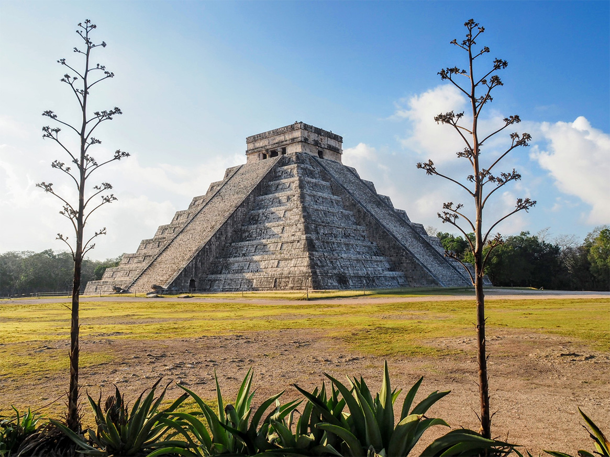

Chichen Itza
Centrum cywilizacji Majów, gdzie astronomia spotyka się z architekturą.

Historia i znaczenie
Chichen Itza była jednym z najważniejszych miast cywilizacji Majów. Znajduje się na półwyspie Jukatan w Meksyku i słynie z piramidy Kukulkana oraz swojego zaawansowanego systemu astronomicznego.
Interesujące fakty:
- Piramida Kukulkana ma 365 stopni - po jednym na każdy dzień roku
- Podczas równonocy widać cień węża schodzącego po schodach
- Była ważnym centrum kulturowym i religijnym Majów
- UNESCO wpisało ją na listę światowego dziedzictwa w 1988 roku
Informacje techniczne:
| Lokalizacja: | Półwysep Jukatan, Meksyk |
| Wysokość piramidy: | 30 metrów |
| Okres rozkwitu: | 600 - 1200 n.e. |
| Znaczenie: | Centrum astronomii Majów |